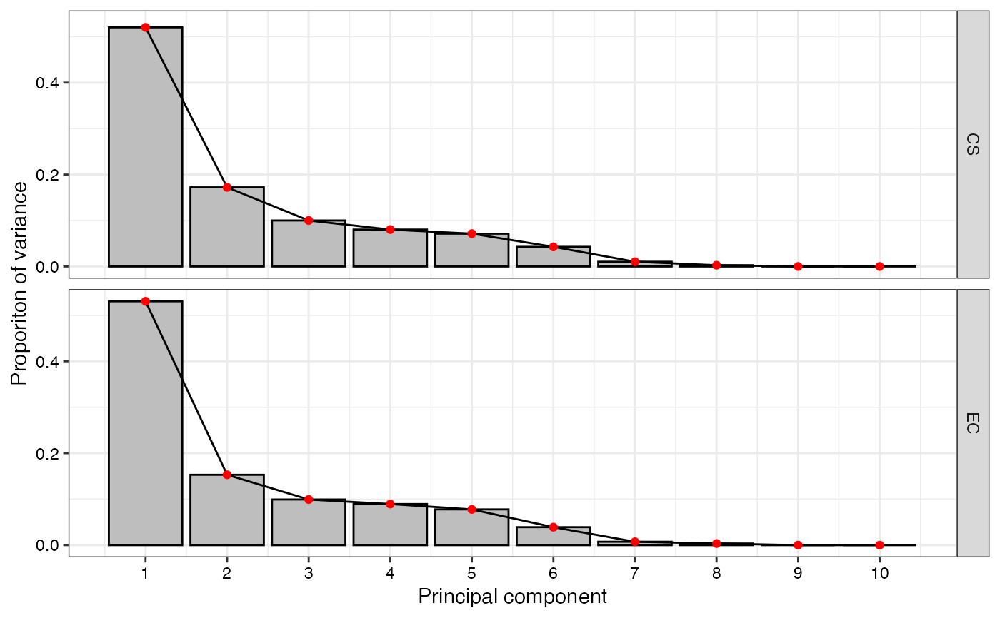
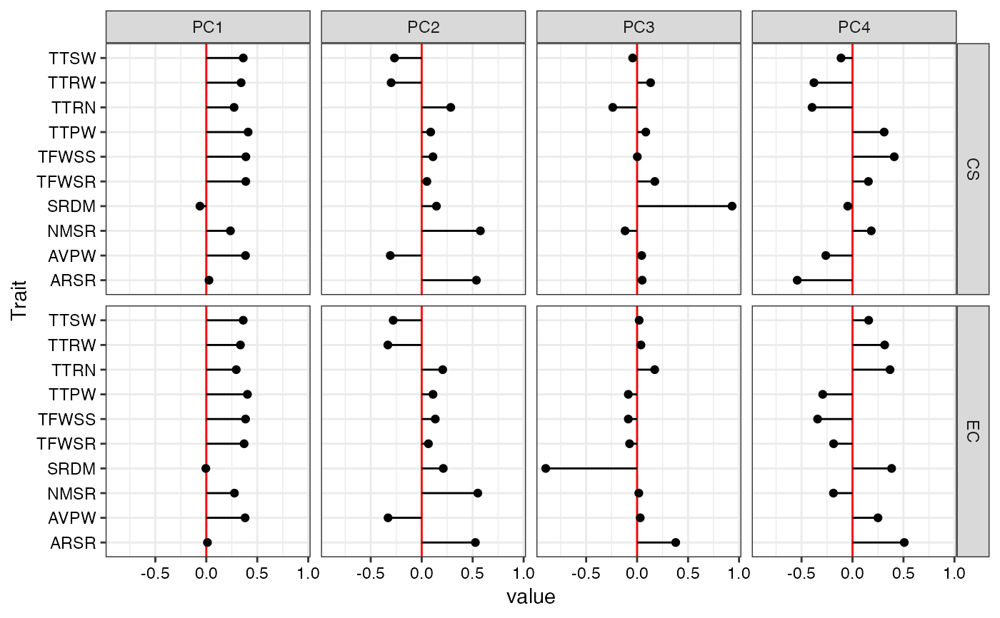

Compute Principal Component Analysis Statistics mardia_multivariate_1979EvaluateCore to compare the probability distributions of quantitative traits between entire collection (EC) and core set (CS).
pca.evaluate.core(
data,
names,
quantitative,
selected,
center = TRUE,
scale = TRUE,
npc.plot = 6
)The data as a data frame object. The data frame should possess one row per individual and columns with the individual names and multiple trait/character data.
Name of column with the individual names as a character string.
Name of columns with the quantitative traits as a character vector.
Character vector with the names of individuals selected in
core collection and present in the names column.
either a logical value or numeric-alike vector of length
equal to the number of columns of x, where
‘numeric-alike’ means that as.numeric(.) will
be applied successfully if is.numeric(.) is not true.
either a logical value or a numeric-alike vector of length
equal to the number of columns of x.
The number of principal components for which eigen values are to be plotted. The default value is 6.
A list with the following components.
A data frame of importance of principal components for EC
A data frame with eigen vectors of principal components for EC
A data frame of importance of principal components for CS
A data frame with eigen vectors of principal components for CS
The scree plot of principal components
for EC and CS as a ggplot object.
A plot of
the eigen vector values of principal components for EC and CS as specified
by npc.plot as a ggplot2 object.
data("cassava_CC")
data("cassava_EC")
ec <- cbind(genotypes = rownames(cassava_EC), cassava_EC)
ec$genotypes <- as.character(ec$genotypes)
rownames(ec) <- NULL
core <- rownames(cassava_CC)
quant <- c("NMSR", "TTRN", "TFWSR", "TTRW", "TFWSS", "TTSW", "TTPW", "AVPW",
"ARSR", "SRDM")
qual <- c("CUAL", "LNGS", "PTLC", "DSTA", "LFRT", "LBTEF", "CBTR", "NMLB",
"ANGB", "CUAL9M", "LVC9M", "TNPR9M", "PL9M", "STRP", "STRC",
"PSTR")
ec[, qual] <- lapply(ec[, qual],
function(x) factor(as.factor(x)))
pca.evaluate.core(data = ec, names = "genotypes",
quantitative = quant, selected = core,
center = TRUE, scale = TRUE, npc.plot = 4)
#> $`EC PC Importance`
#> PC1 PC2 PC3 PC4 PC5 PC6
#> Standard deviation 2.303455 1.237223 0.996322 0.9455592 0.8817511 0.6251589
#> Proportion of Variance 0.530590 0.153070 0.099270 0.0894100 0.0777500 0.0390800
#> Cumulative Proportion 0.530590 0.683660 0.782930 0.8723400 0.9500900 0.9891700
#> PC7 PC8 PC9 PC10
#> Standard deviation 0.271212 0.1864651 4.033635e-15 1.338255e-15
#> Proportion of Variance 0.007360 0.0034800 0.000000e+00 0.000000e+00
#> Cumulative Proportion 0.996520 1.0000000 1.000000e+00 1.000000e+00
#>
#> $`EC PC Loadings`
#> PC1 PC2 PC3 PC4 PC5 PC6
#> NMSR 0.276022186 0.55062492 0.01668655 -0.1871023 0.248244608 -0.21686806
#> TTRN 0.293942565 0.20622412 0.17262243 0.3680853 0.581178024 -0.33878178
#> TFWSR 0.371192088 0.06599302 -0.07379106 -0.1852754 -0.463167012 -0.33058227
#> TTRW 0.334894681 -0.33211659 0.03783194 0.3153475 -0.297171591 -0.40373685
#> TFWSS 0.385024604 0.13341651 -0.08631304 -0.3426523 0.050559491 0.39246657
#> TTSW 0.362255093 -0.27969168 0.02022637 0.1585548 0.250560331 0.51748203
#> TTPW 0.403699747 0.11088360 -0.08613665 -0.2920918 -0.184053823 0.08318831
#> AVPW 0.380627616 -0.33011132 0.03067827 0.2497406 0.002748448 0.10913947
#> ARSR 0.011265368 0.52673026 0.37858111 0.5081543 -0.444763915 0.34913640
#> SRDM -0.004586239 0.21186429 -0.89638345 0.3837654 -0.027148446 0.05797814
#> PC7 PC8 PC9 PC10
#> NMSR 0.66616815 0.181386616 -1.645650e-15 7.445343e-16
#> TTRN -0.49417918 -0.095026370 3.536674e-16 -1.428385e-15
#> TFWSR -0.32960316 0.499641762 -3.419350e-01 -1.381350e-01
#> TTRW 0.31608453 -0.416500300 -1.460210e-01 3.614559e-01
#> TFWSS -0.10285083 -0.558642359 -4.445235e-01 -1.795787e-01
#> TTSW 0.07640644 0.454657280 -1.764363e-01 4.367448e-01
#> TTPW -0.21455970 -0.104941479 7.383608e-01 2.982832e-01
#> AVPW 0.20120313 0.065453705 2.963963e-01 -7.336900e-01
#> ARSR -0.01979215 -0.027945977 -1.084265e-16 5.583470e-18
#> SRDM -0.01152032 -0.009060183 -1.189926e-16 -1.143250e-16
#>
#> $`CS PC Importance`
#> PC1 PC2 PC3 PC4 PC5 PC6
#> Standard deviation 2.280951 1.312257 1.000457 0.8959377 0.8451336 0.6538375
#> Proportion of Variance 0.520270 0.172200 0.100090 0.0802700 0.0714300 0.0427500
#> Cumulative Proportion 0.520270 0.692480 0.792570 0.8728400 0.9442600 0.9870100
#> PC7 PC8 PC9 PC10
#> Standard deviation 0.3207286 0.1643265 1.032366e-15 3.669511e-16
#> Proportion of Variance 0.0102900 0.0027000 0.000000e+00 0.000000e+00
#> Cumulative Proportion 0.9973000 1.0000000 1.000000e+00 1.000000e+00
#>
#> $`CS PC Loadings`
#> PC1 PC2 PC3 PC4 PC5 PC6
#> NMSR 0.23686459 0.57588211 -0.118000407 0.18406534 0.22404134 -0.154356246
#> TTRN 0.27243380 0.28489364 -0.238654425 -0.39636509 0.59296937 -0.185643439
#> TFWSR 0.38732336 0.05088131 0.173676592 0.15588284 -0.33283776 -0.410239780
#> TTRW 0.34195710 -0.29955595 0.132403764 -0.37824392 -0.14609160 -0.425032356
#> TFWSS 0.38798499 0.11032791 0.002061297 0.40943370 -0.02293943 0.339541418
#> TTSW 0.36275510 -0.26716740 -0.043442847 -0.11254725 0.18634678 0.589974192
#> TTPW 0.41017366 0.08800885 0.085090829 0.31069206 -0.17398680 -0.002991297
#> AVPW 0.38441017 -0.30812430 0.044838607 -0.26192922 0.02880417 0.110848682
#> ARSR 0.02642625 0.53641424 0.049592980 -0.54225171 -0.54787309 0.334180984
#> SRDM -0.06233279 0.14455341 0.931570561 -0.04658879 0.31551819 0.073690249
#> PC7 PC8 PC9 PC10
#> NMSR 0.69455927 0.089542525 -5.893990e-16 2.361951e-17
#> TTRN -0.49373454 -0.026538022 7.853091e-16 -3.234060e-16
#> TFWSR -0.24125034 0.553541017 3.409506e-02 3.848106e-01
#> TTRW 0.26321979 -0.434887362 -4.135011e-01 3.663710e-02
#> TFWSS -0.17717813 -0.557775840 4.057250e-02 4.579176e-01
#> TTSW 0.13648832 0.424831173 -4.461038e-01 3.952578e-02
#> TTPW -0.21841109 -0.053240284 -7.057336e-02 -7.965194e-01
#> AVPW 0.21517212 0.012287406 7.888086e-01 -6.989017e-02
#> ARSR -0.04644065 -0.032656495 2.874973e-17 -6.847934e-17
#> SRDM -0.01212024 -0.009789162 5.367396e-17 1.281538e-18
#>
#> $`Scree Plot`

#>
#> $`PC Loadings Plot`

#>